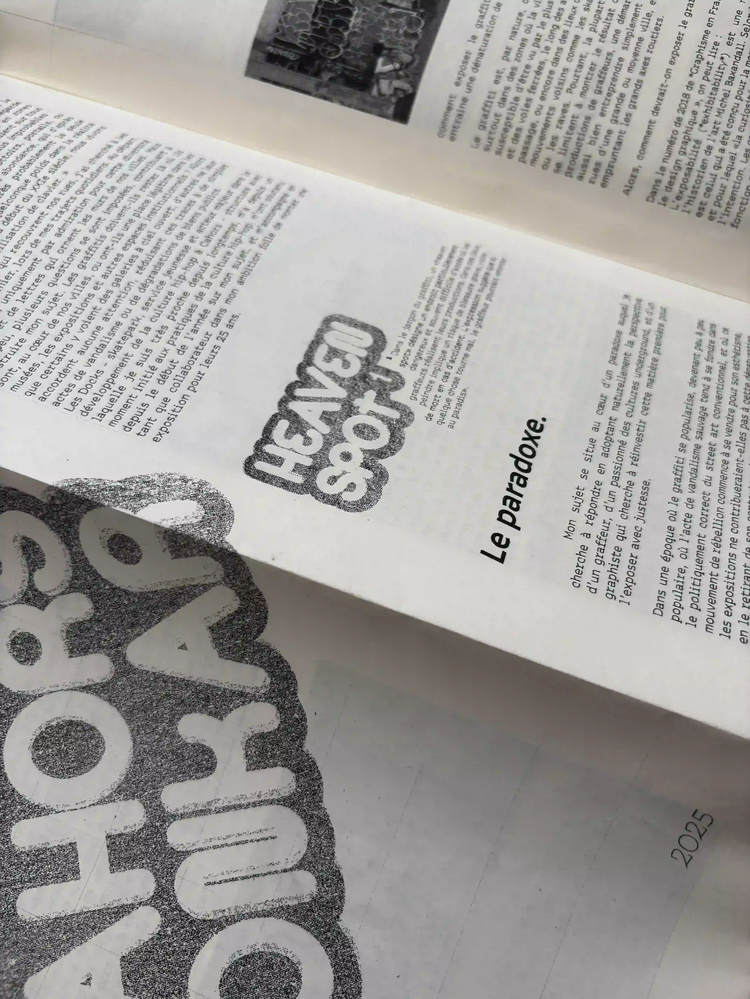
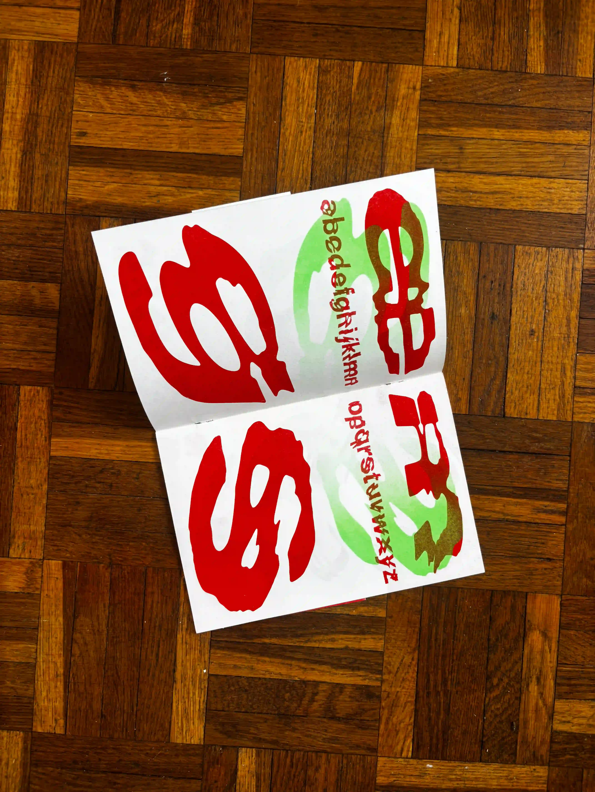

Tous les projets.
Une sélection de travaux, recherches et expérimentations graphiques.
SELECTED WORKS
001 — 006
 001
001
Ariane Fest
IDENTITÉ VISUELLE / 2025 ↗
002Cahors Tonkar
ÉDITION / RECHERCHE MÉMOIRE / 2025 ↗ 003
003
Typologie
RECHERCHE TYPOGRAPHIQUE / 2025 ↗ 004
004
Les bruits de ma ville
INTERACTIF / 2024 ↗
005Vacarme "typomorphose"
RECHERCHE TYPOGRAPHIQUE / ÉDITION / 2025 ↗ 006
006